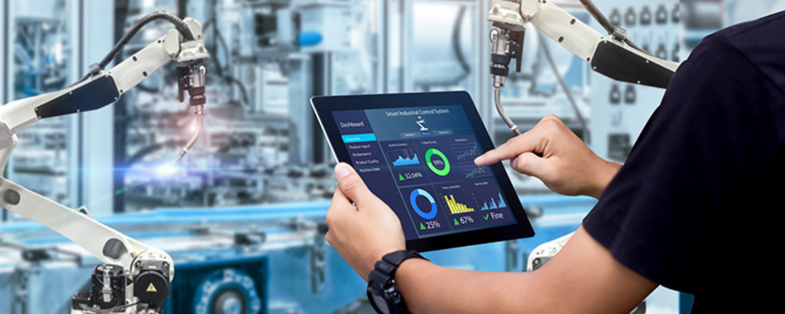

Semana 8
CLASE PRESENCIAL
En esta clase vimos acerca de la fabricación digital lo que consiste en el uso de un sistema integrado y asistido por ordenador compuesto por herramientas de simulación, la ventaja es que ayuda a las empresas de fabricación a mejorar la productividad en los procesos de planificación y producción. Algunas herramientas para la fabricación digital serían: Impresoras 3d, Escáners 3D, Software de diseño asistido por computadora y generativo, cortadoras laser, CNC, etc. Además aprendimoas los fundamentos en CAD, CAE Y CAM. Vimos lo que es el flujo de diseño y fabricación, aprendimo sus diferencias y cuales son las ventajas de obtar por esas alternativas. Además de que aplicaciones existen, como: Diseño de circuito electronicos, industria de automoviles, diseño arquitectonico, industria texil, etc.